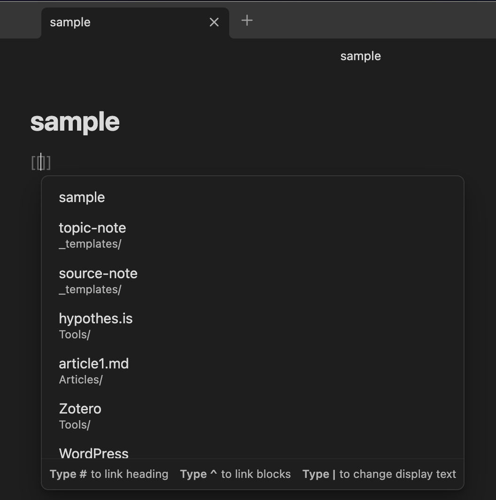

Unit 3 Connecting Ideas for Learning
Overview
Topics
This unit is divided into the following topics:
- Sense-making through Hyperlinks
- Sense-making through Tags
- Note-Taking
- Concept Maps
- Digital Tools to Support Learning
Learning Outcomes
When you have completed this unit, you should be able to demonstrate your ability to achieve the following course outcomes:
- Build and customize technology-integrated workflows to enhance and enrich your learning journey.
- Practice evaluative judgment to document your process of learning in complex domains of knowledge.
- Evaluate digital tools, platforms, and interactions based on ethical principles.
Activity Checklist
Here is a checklist of learning activities you will benefit from in completing this unit. You may find it useful for planning your work.
Learning Activities
- …
- …
Note: The learning activities in this course are designed to prepare you for the graded assigments in this course.
You are strongly encouraged to complete them.
3.1 Sense-making Through Hyperlinks
In higher education, your task as an undergraduate is to build on the skills you bring from high school and apply those skills in a much more focussed field of study. Previously, you might have been able to succeed in school by having a great memory, but increasingly in university, you will be asked to do much more. You will be required to understand the theoretical basis of ideas (analysis) and also make connections between ideas to create new ideas (synthesis). This may feel challenging at first, but you will learn.
One of the challenges is that there is simply far too much information for you to analyze for any task that you might need to do for an instructor. In a previous unit, you learned some basic skills in finding and managing resources that you will need, and in this unit, you will learn some ways to begin to analyze and synthesize information and documents in a systematic way.
If you learn this workflow well, and learn how to customize it to your needs (that’s synthesis), you will be ahead of the game when it comes time to complete papers in other courses.
The key to this component of your workflow is the lowly hyperlink. You likely know that if you click or tap on that highlighted word, you will be taken to another website, in this case, the wikipedia article on hyperlinks. That is a hyperlink and it is the most basic unit of the entire internet, which is simply a massive collection of documents all linked together. At it’s most basic form, a hyperlink is simply a connection between two documents where a hyperlink in one document allows you to open the second document.
In this workflow, instead of just linking two documents together, you will link two ideas together (by linking documents). Your Obsidian vault is essentially a website that is only accessible on your computer, and instead of links going to documents on other servers, you link to documents within the vault (although you can still link to the web).
Linking in Obsidian
There are two methods of building hyperlinks in Obsidian: wikilinks and markdown links, and we will cover both here.
Wikilinks
A wikilink, the default in Obsidian, is really simple to build. All you have to do is type two opening square brackets, like this [[, and Obsidian will do a couple things automatically. First, Obsidian will create the closing brackets to match, so you end up with this [[]], with your cursor in the middle, and second, Obsidian will present a list of all the pages in your vault, from which you can choose the page you want linked.

Once you choose a page, Obsidian will do the rest, and you will end up with this view:

As you can see, I am on the ‘Hypothes.is’ page, and I have created a link to the ‘Zotero’ page. If I press and hold the ‘Command’ (macOS) or ‘CTRL’ (Windows) button on my keyboard and then hover over the link, I will get a preview of the Zotero page. If I press and hold the ‘Command’ (macOS) or ‘CTRL’ (Windows) button on my keyboard and then click the link, I will be taken to the page. Once I am on the Zotero page, I can scroll to the bottom of the page and see the ‘Backlinks’ (a link back to the ‘hypothes.is’ page). If you don’t see the backlinks, click the three dots in the top, right corner of the page and choose ‘Backlinks in document’.
Markdown Links
While wikilinks are the default in Obsidian, and are the easiest way to link within your vault, sometimes you might want to link to a site on the web. The syntax for a markdown link is a bit different, but is still very simple. There are two parts you need to remember:
- the link text
- this is what you want your reader to see on your page.
- the link URL
- this is the web address of the site you want them to visit.
Here is the syntax - [Link text between single square brackets](URL inside parentheses) So if I want someone to see the word ‘YouTube’ on the page, and for them to be taken to the YouTube website when they click the link, the syntax would be [YouTube](https://youtube.com) which will display like this YouTube. Notice that there are no spaces between the closing square bracket and the openning parenthesis.
Why link?
Creating links to other related topics in your notes is a way that you can start to build connections in your mind about how different ideas are related. For example, if you are studying ‘trees’, you might want to link over to the previous notes that you created on ‘plants’, ‘forests’, or ‘climate change’. During your study on trees, you might want to create notes on ‘deciduous’ and ‘coniferous’ trees or ‘xylem’ and ‘phloem’, and link those articles to ‘trees’. by continually linking notes that are related, you are creating a web of your knowledge as well as reminders of how ideas are related. So linking is a way for you to make sense of the information that is coming into your conciousness.
Once you have links created between different files in your vault, you can visualize these links using the ‘Graph View’ in Obsidian. Here is part of the graph view for a major paper I wrote recently. Each of the white dots represents a file in my vault and the size is relative to the number of pages linked to that article. You can see that there are three really big pages that have many links. Those are clearly very important pages.

3.2 Sense-making Through Tags
A tag is a very short, descriptive word or phrase you can apply to an idea. You are likely familiar with the idea of a hashtag # from various social media apps as a way to quickly find information on a specific topic. A tag in Obsidian works just like a hashtag in social media. If you type #trees on a file about trees, and then do the same on your pages about ‘xylem’, ‘phloem’, ‘climate change’, ‘plants’, ‘forests’, ‘deciduous’, and ‘coniferous’, you could click on that tag on any one of those pages, and Obsidian will find every page that contains that tag.
This acts like a super-fast search of your notes for a particular topic or ideas related to a topic.
We recommend that you put your tags in the same spot on each page so you know where to find them. You can also put those tags at any place in your notes and Obsidian will show you the specific spot in your notes where the tag lives.
You can also show tags in your graph view, as below. Green dots are tags and white dots are still files. You can see in this image that there are many more connections.

You can click on one of the tags in Obsidian and see highlighted connections and search results for that tag, allowing you to go directly to notes of interest.

Using links and tags together, you can build a very powerful and easily searchable vault of all the ideas in your courses. This can be incredibly valuable when it comes time to write a paper or prepare for an exam, you can have all your notes easily accessible rather than having to search through pages and pages of hand-written notes.
3.3 Note-Taking
Listening and note-taking
In this section we will listen and take notes from watching a video recording. The advantage of online video is that you can pause playback, or even increase the playback speed if you like.
Some learners prefer taking notes with pen and paper, but in this activity you will be required to use a note-taking application. You can, always use pen and paper to prepare your first draft before recording a digital text version of your notes. Most citation management tools provide note taking capabilities which you can associate with items stored in your library, however for the purposes of this activity you will directed to use Simplenote (an open source tool) because we will be using features of this tool for other course activities.
Activity: Listening & Note-taking
Read the following articles: - What’s the best, most effective way to take notes? published by The Conversation. - Effective listening and note taking published by University of New South Wales.
Activity: Open Video and Audio Lectures
Search for a video or audio lecture on a topic of interest. Use your advanced search skills or browse the following sites to find a suitable recording aligned with your interests.
- Open culture: Over 30,000 hourse of free audio and video lectures.
- Open Yale courses: Free and open access to a selection of introductory courses including video lectures from Yale University.
- Open learning at Harvard: Series of video lectures from Harvard University.
- MIT Opencourseware: Series of audio and video lectures from Massachusetts Institute of Technology.
- Tedx talks: Extensive database of video presentations in the form of short, powerful talks. (See also list of topics).
Using Obsidian, record your notes from the lecture.
- The first line is used for the title of the note.
- Remember to include a link to the source of the information.
- Use tags
Reading and note-taking In this section, you will demonstrate your note-taking skills based on reading an academic publication.
The challenge which follows also incorporates digital skills associated with semantic content markup using the Markdown markup language. Semantic markup is an important digital skill which separates formatting (e.g. headings, bold, italics, lists etc.) from the content using designated characters without the use of rich text editors. This provides the capability to use plain text files that can be converted to formatted text online. Markdown is one of many markup protocols, and is used here to demonstrate the principles of semantic markup.
Activity: Reading & Note-taking
Read the following articles and take notes in Obsidian.
- Effective note taking published by the University of New South Wales.
- Reading for Understanding: The SQW3R Method published by the University of New South Wales.
- How to (seriously) read a scientific paper
Try using Markdown to format your text. - Basic formatting syntax - Using Markdown in Obsidian
Activity: Writing a Summary of your Readings
- Search for a peer reviewed journal article in support of a research topic of interest.
- Remember to add the source to your citation management tool, Zotero.
- Prepare a summary of the journal article based on this example.
- Use the Markdown formatting in Obsidian. Your summary must at a minimum demonstrate the following text formats:
- Headings and subheadings
- Bold and italics
- Numbered or unordered list
- Labelled link
- Horizontal rule
- Block quote for one or more citations from the article
Copy your summary prepared in Obsidian and paste this text summary into Zotero using the notes feature so that you have a copy for your personal library as backup.
Reflect on your progress in practicing these digital skills. Share you thoughts in your Reflective Journal and/or in Discourse.
Activity: Digital skills versus literacies
In this activity, we will review an article on the difference between digital skills and digital literacies using Hypothes.is – an online social annotation technology.
Purpose Read an online article and annotate it using Hypothes.is.
Tasks
- Read the Hypothes.is “Quick start guide for students”
- Create an account on Hypothes.is. Here is the registration link We recommend that you use the Chrome browser (download here) and install the Hypothes.is extension. Alternatively, you can annotate web pages directly from the Hypothes.is website by pasting the link into the text area after you have logged into the site. If you are working on a mobile device, please follow these instructions: How to use Hypothes.is on mobile devices.
- Read the following article: Knowing the Difference Between Digital Skills and Digital Literacies, and Teaching Both
- Activate the annotations after logging in to Hypothes.is and click on the search icon () and enter the course code (LiDA101) to filter posts for this course from the public feed.
- Annotate or reply to posts by visiting the annotation page (You will need to be logged into the Hypothes.is site to post.)
- Remember to tag your posts using the course code: LDRS101 (The course tag is required to harvest posts for the course feed.)
Assessment
- See the Assessment section in Moodle for assignment details and due dates.